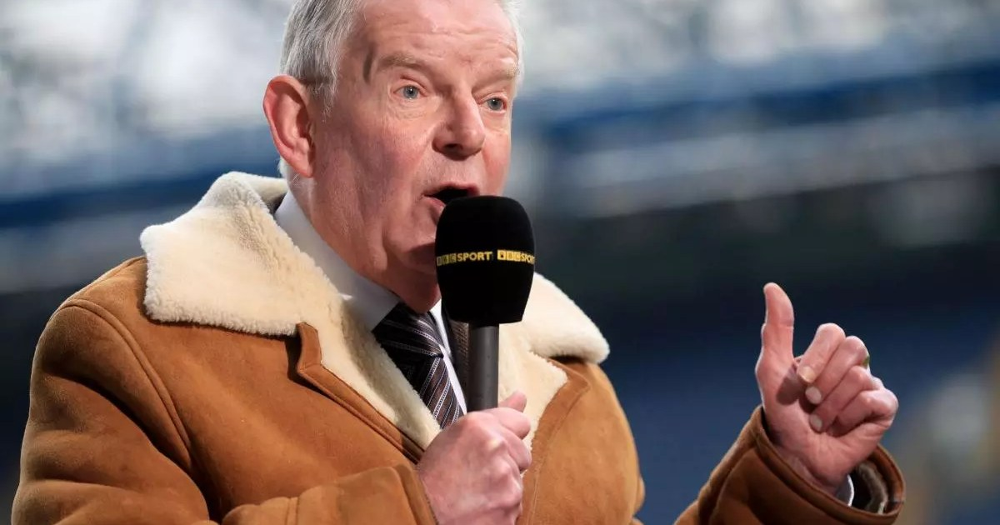

EA is bringing John Motson back to FC 27 — an AI recreation of the late commentator, three years after his death
EA Sports announced that legendary commentator John Motson will return to EA Sports FC 27 as an optional commentary voice, rebuilt from his original recordings with AI — with his family's blessing, and three years after his death.

The voice of a generation of FIFA is coming back. EA Sports announced on November 25 that legendary English commentator John Motson will return to EA Sports FC 27, rebuilt with AI from his own recordings — three years after his death, and two decades after he last called a game in the series.
Motson died in February 2023, aged 77, after a broadcasting career that stretched across half a century with the BBC. He covered ten World Cups, ten European Championships and 29 FA Cup finals, and for a generation of players he was simply the voice of the game — the commentator on FIFA 96, the first entry in the series to feature commentary, through FIFA 06.
How the tribute works
The new Motson is a mix of the real thing and a recreation. EA says it built the tribute on almost ten years of Motson's in-game recordings, then used AI tools trained on his voice to generate new lines — the only way to cover modern players he never commentated on, like Bradley Barcola and Chloe Kelly. Senior game design director Mat Prior told the BBC that AI was "the only way" to do it, because no recordings exist of Motson talking about today's squads.
It arrives in Title Update v1.3.0 on November 26, 2026, as an optional commentary selection sitting alongside the game's existing broadcast teams. Players will have to switch it on in the settings — it does not replace the current commentators.
The family's blessing — and the debate
This one only happened with permission. Motson's widow and his son Fred gave EA the go-ahead, and EA paid the family for the rights to use his likeness and voice. His son said his father "adored being the voice of the game." Prior was blunt about the line EA drew: "There was no way we would have moved forward with this in any way, shape or form if they weren't fully on board."
Not everyone is comfortable with it. The campaign group Save Our Voices Now told the BBC a voice should not be cloned without the person's agreement in life, and the tribute lands in the middle of a wider argument about AI recreations of dead performers. EA's answer is that the tribute is a one-off memorial, not a precedent — Prior said it is "not there to replace commentators in any way shape or form" and that there are "certainly no future plans to replace anyone with AI."
A first for the series
EA calls it a digital tribute, and it is the first time the series has put a deceased commentator back in the booth. The idea is not entirely new inside EA Sports, though — NHL 27's John Buccigross has said an AI version of his voice is used for some of his lines, with his blessing, because it means less recording work for him.
For anyone who grew up with Motson's voice over a PlayStation, the appeal is obvious. He was the sound of FIFA before FIFA had a sound of its own, and from tomorrow, a whole new generation of players can hear him call a game he never got to see.
Sources: EA SPORTS FC 27 | John Motson Tribute (EA Sports) · EA adds AI-generated John Motson to FC 27 video game (BBC) · EA Sports FC 27 is adding an AI-generated John Motson to its commentary team, three years after his death (Video Games Chronicle) · EA FC 27 adds AI-generated commentary from iconic commentator (Dexerto)
Gear up: Razer — mice, keyboards, headsets and laptops.